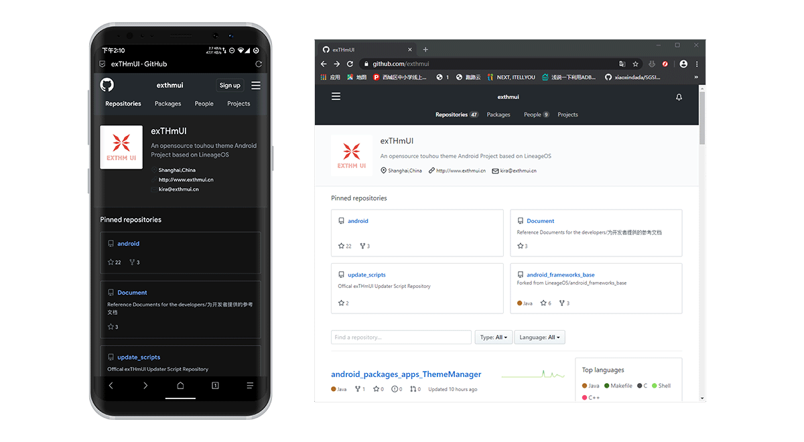
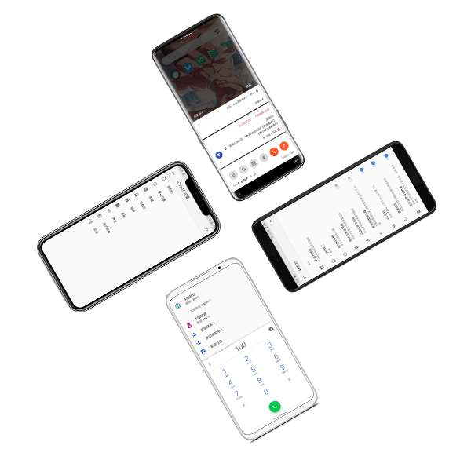

代码完全开源
exTHmUI Project
exTHmUI的源代码公开在GitHub上，任何人都可以贡献或查看。
Go to GitHub

自主研发的主题引擎
exTHmUI内置了自主研发的ThemeManager主题引擎(基于OMS)，主题设计师可参照设计文档来开发主题；用户只需安装一个与Substratum主题类似的安装包即可使用主题。

本地化&自定义
exTHmUI内置来电归属地、黄页、MiPush等本地化功能，符合国人使用习惯。
exTHmUI内置高级自定义设置、主题管理器等功能，让您的使用体验更上一层楼。
简洁流畅
虽然 exTHmUI 基于 LineageOS 本地化并改动许多，但仍保留了类原生简洁、流畅的特性。
所以即使您使用的是老设备，仍然可以拥有与LineageOS几乎相同的使用体验
准备好体验激动人心的exTHmUI的了吗
EXTHMUI PROJECT
如果你想加入我们，请联系酷安